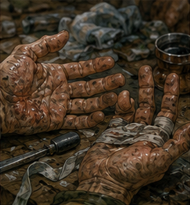
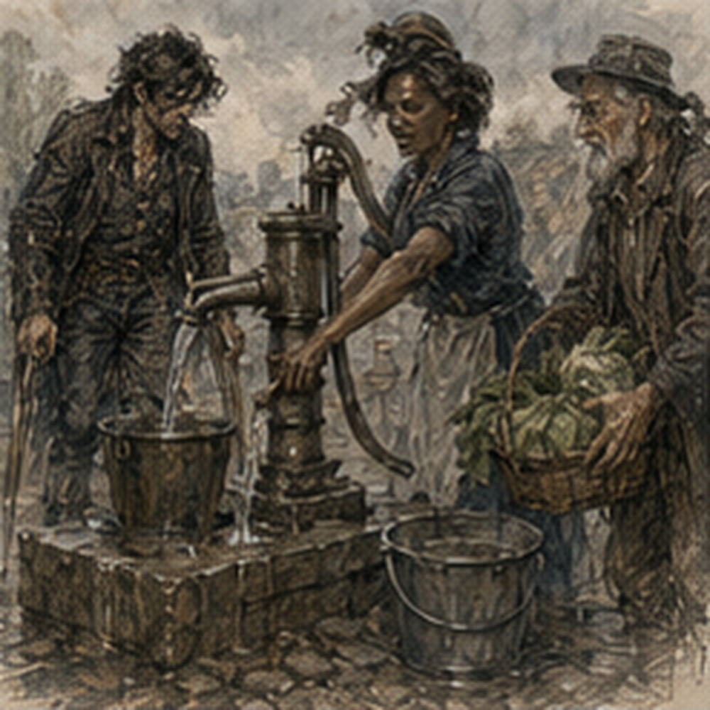

The four copper lasted until dinner. This was not because I spent four copper. I spent one. The other three remained in my pocket while I sat on the edge of my bed and stared at my hands. Blisters. Two on the right. One on the left. Small. Ordinary. Embarrassing.
I had once held Barriers against things that could break stone. Now a hooked pole had injured me. Not badly. Still. I pressed the skin beside the largest blister. Pain. Useful. I stopped. Testing pain by making pain was stupid. Hessa would have said so. Jorren would have laughed first.
Alden would have asked whether I was trying to lose a fight to my own palm. Berren would have said the blister was probably afraid of him. Too many people had acquired voices in my head. That seemed unhealthy. I washed. The water turned gray. Mud had reached places mud should not reach. My ribs ached when I bent. Shoulders worse. Forearms worse than shoulders.
Right calf tight. No channel pain. No pressure behind the eyes. No heat. Good. One clean Barrier. Very small. Exactly enough. I wanted to cast another. Not because I needed one. Because I could. This was the problem with getting permission. Before permission, restraint had structure. After permission, there was choice. Annoying. The regulator sat on the desk. Mechanical test. Water. No mana.
Useful. I looked at the washbasin. Then my hands.

Then the bed. The bed won. I woke after dark. Not planned. Still dressed. One boot on. One boot off. Face against the blanket. My neck hurt. Young body recovered quickly if given the chance. It also demanded the chance with violence. I sat up. Hunger. Again. Nineteen was mostly hunger pretending to be a personality. I found bread. Hard. Cheese. Harder.
Ate both. No cooking. No strategy. The room had cooled. Street noise below had thinned to occasional carts and arguments. I took the regulator from the desk. Arlo had asked for use. Mechanical. Flow medium. Orientation. Duration. Temperature if relevant. External vibration. I could test with wash water. I found a cup. Then stopped. Dirty water. No. Fresh. I went downstairs. The lodging keeper was counting coins behind the front desk.
She looked at the cup.
“Water?”
“Yes.”
“Pump.”
“Outside?”
“Yes.”
“It’s dark.”
She looked at me. I went outside. The public pump stood thirty paces away. Three people were there. A woman filling two buckets. A boy with a jug. An old man rinsing something that looked like turnips. Turnips. Jorren. I smiled. The old man saw.
“What?”
“Nothing.”
He moved his turnips away from me. Reasonable. I waited. No urgency. The woman finished first. The boy spilled half his jug and started again. I could have helped. Did not. He knew how. Eventually my turn. I filled the cup. Then another.
Back upstairs, I fitted the regulator between a small funnel and a narrow tube improvised from a cleaned quill shaft. Ugly. Functional. First test. Vertical. Water. Room temperature. No vibration. The flow was too fast to show much. I adjusted. Slower. Better. The regulator held. Not perfectly. Small pulses. Less than the first design. I wrote it down. Second test. Tilted. Flow changed.
Not much. Interesting. Third. Horizontal. Worse. I frowned. Then remembered Arlo’s face. Too good. No. Different. I tapped the table lightly. Flow fluttered. Stopped. Fluttered again. External vibration. There. Useful. Not magic. Simple. I recorded it. Then I wanted to know whether thicker liquid changed behavior. Oil. No. Arlo said bad. Could test anyway. Not tonight. I wanted to know whether temperature mattered.
Cold water. Hot water. Easy. No. Bed. My hands hurt. Tomorrow. I wrapped the regulator again. That felt like progress too. Stopping before exhausting the question. Maybe. Or I was tired. More likely. I slept properly. Morning arrived with consequences. Hands worse. Shoulders better. Ribs about the same. No headache. No channel symptoms. Good. I ate before leaving. Two eggs. Bread.
Something green that might have been an herb and might have been a leaf the cook had regretted. Still food. At Hessa’s, the fourteen-year-old boy from before was already there. He stood with both hands around a clay cup. Nothing happened. Hessa said, “Again.” He breathed. Focused. A faint warmth appeared against my face. Not visible. Barely there. The boy smiled. Then lost it.
Hessa said, “Good.” He looked disappointed.
“Again?”
“No.”
“But I got it.”
“Yes.”
“So again.”
“No.”
He frowned. I liked him. Hessa looked at me. I stopped smiling. The boy noticed.
“You’re Greg.”
“Yes.”
“You’re the Barrier one.”
That phrasing was new.
“Apparently.”
He looked at my hands.
“What happened?”
“Millrace.”
“Monster?”
“Reeds.”
He stared. Hessa looked almost pleased. The boy left. His disappointment went with him. No dramatic lesson. Just a boy who wanted another try. I sat on the mat. Hessa checked my hands first.
“Blisters.”
“Yes.”
“What did you do?”
“Work.”
“That is not an explanation.”
“Millrace clearing.”
She nodded.
“Casting?”
“One small Barrier.”
“When?”
“Yesterday afternoon.”
“Symptoms?”
“No.”
“After?”
“No.”
“Overnight?”
“No.”
“Alcohol?”
“No.”
“Good.”
She checked pulse. Eyes. Palm. Then stepped back.
“Barrier.”
I formed one. Coin-sized. Low. Three breaths. Release. Clean. Again. Four breaths. Release. Still clean.
“Larger,” she said.
I looked at her.
“How much larger?”
“Hand.”
Good. Palm-sized. I shaped it. Not dense. Not hard. Just there. Three breaths. The channels noticed. Not pain. Load. Familiar now. Release. Hessa waited.
“Anything?”
“Pressure one.”
“Where?”
“Behind eyes.”
“Gone?”
“Mostly.”
She waited another ten seconds.
“Now?”
“Gone.”
She nodded.
“Again.”
I wanted to. Very much. I formed the Barrier. Same size. Same load. Two breaths. Pressure one. Then two. I dropped it. Immediate. Good. Hessa said nothing. I sat. Waited. Pressure faded.
“Good,” she said.
“For stopping?”
“Yes.”
“That is a low standard.”
“For you, no.”
Fair. She checked again.
“No more Barrier today.”
I frowned.
“That was two.”
“Yes.”
“I can do more.”
“Yes.”
“So why not?”
“Because yesterday was physical fatigue and one tiny cast. Today you showed clean recovery and repeatable symptom onset under larger load. That is enough information.”
I hated information when it ended experiments.
“What can I cast?”
“Small utility. No sustained Barrier. No repeated load testing.”
“So still restricted.”
“You are recovering.”
“Semantics.”
“Body.”
Worse. I looked at my hands. Blisters. She saw.
“Those matter too.”
“To magic?”
“To you.”
“I can hold a sword.”
“For how long?”
“I don’t know.”
“Good answer.”
I disliked that too. The planned spar was tomorrow. Alden. Berren. Short rotating rounds. No chasing. No extending after call. Good structure. My body was not ready for twenty minutes. Maybe ten. Maybe less. Tomorrow would decide.
“Do I spar?”
Hessa looked at me.
“Tomorrow?”
“Yes.”
“With?”
“Alden and Berren.”
She knew Alden by now. Not well. Enough.
“Berren is the bitten one?”
“Yes.”
“Then all three of you are injured.”
“That makes it fair.”
“No.”
“It makes it symmetrical.”
“No.”
I smiled. She did not.
“Light rounds if you wake clean. No Barrier unless you can do it without pressure. If pressure starts, stop casting. If ribs worsen, stop. If your hands open, stop.”
“My hands will not open.”
She looked at the blisters.
“Those.”
Right.
“Wrap?”
“Yes.”
“Anything else?”
“Eat.”
“I eat.”
“You forget.”
“I remember eventually.”
“That is not eating.”
Fine. I left with more permission and fewer fantasies. Outside, the morning was bright and cool. I had no immediate appointment. That was dangerous. Antonius? Possible. Arlo? Regulator data. Edrin? No message. Sinkstone? Still interesting. Silas Marris? Still not today. Jorren? Working dock gate. Alden? South farms escort. Berren? Probably foot. I could go back to my room. Test the regulator. Write notes.
Rest. Or Antonius could find work and pay down debt. Debt won. Mostly because it existed even when I ignored it. I went west. Rusk was not at the storehouse. A worker I recognized from the bean day said, “Vale office.”
“Which?”
He pointed upstairs. Of course. Antonius sat at the desk with three ledgers open and a woman in a green coat standing beside the window. I stopped in the doorway. Antonius looked up.
“You.”
“Yes.”
“You have mud on your boots.”
“Yesterday.”
“That is not better.”
The woman in green looked at me. Not interested. Good. Antonius said, “Wait downstairs.” I did. No questions. That felt strange enough that I noticed. Downstairs I helped Jalen move two crates because he asked. Not Antonius work. No pay. One crate was heavy. My hands objected. I adjusted grip. Used forearms. Bad. Still got it moved. Jalen said, “You’re the bean man.”
“No.”
“You found the drain.”
“Yes.”
“Bean man.”
Fine. We stacked the crates. Then another worker asked me to hold a ledger while she checked labels. I held it. That was all. Ten minutes. Fifteen. No one came for me. I could leave. I did not. The storehouse had its own rhythm. Cart in. Cart out. Numbers shouted. Cloth moved. Oil checked. Someone cursed a broken wheel. No mystery. I watched a boy perhaps sixteen count bundles badly.
He skipped one. I knew because I had counted too. Then he started over without anyone telling him. Caught it. Good. I said nothing. Antonius came down eventually. The woman in green left by the side door. He looked at the crates.
“Did I hire you?”
“No.”

“Then why are you moving things?”
“Jalen asked.”
“Did he pay you?”
“No.”
Antonius looked at Jalen. Jalen looked busy.
“Interesting,” Antonius said.
“That word is dangerous from you.”
“Yes.”
“What work?”
He handed me a folded sheet. Inventory transfer. Verran customers. Two had taken temporary space. One had not. Soap maker.
“Check twelve crates.”
“For?”
“Damage. Seal condition. Count. Nothing magical.”
“Why me?”
“You are here.”
That was becoming a system. I checked. Twelve crates. Three dented. One seal cracked. No contents exposed. Count correct. Soap smelled through wood. Antonius reviewed my sheet.
“Four copper?”
I blinked.
“What?”
“Millrace.”
“How do you know?”
“Guild contracts are posted.”
“You track my income?”
“I track people who owe me money.”
“That is disturbing.”
“It is debt.”
He looked at my hands.
“Blisters.”
“Everyone sees everything.”
“Yes.”
He turned the sheet over.
“Did you enjoy it?”
I stopped. That question was worse than money.
“Why?”
He looked at my hands.
“You came back with blisters and still sound pleased about four copper.”
Hostile city.
“I enjoyed parts.”
“Why?”
“I don’t know.”
He nodded. No follow-up. That annoyed me.
“You don’t care?”
“Should I?”
“I expected analysis.”
“I have work.”
Good. He moved to the next ledger. I stood there. Antonius looked up.
“What?”
“Nothing.”
“Then go.”
I almost did. Then remembered.
“Silas Marris.”
His expression changed a fraction.
“If this is about pursuing them, don't.”
“I only said the name.”
“And I am telling you the boundary before you make it my problem.”
“I have not pursued them.”
“Good.”
“Edrin has not sent word.”
“Also good.”
“You sound invested.”
“I am invested in you continuing to owe me money.”
“There.”
“Go rest.”
I stared.
“Is that concern?”
“It is asset maintenance.”
“Better.”
I left. Outside the west storehouse, I had three copper from the millrace. Still. Antonius had not taken them. Interesting. He could have. Debt payment. He did not. Maybe because I had not offered. Maybe because he preferred scheduled payment.
Maybe because collecting every coin immediately reduced my capacity to work. Systems. No. Not now. I bought lunch. Two copper. Too much. Meat pie. Actually good. Worth it. One copper left from the four.
I sat on a low wall near the canal and ate. No one I knew nearby. No work. No appointment. The regulator in my bag. I took it out. Mechanical test. Fine. I found a public pump again. This time I tested cold water in three orientations. Vertical. Tilted. Horizontal. Recorded.
Then held the body in one hand and tapped the tube with the other. Vibration. Flow flutter. Same direction. Repeatable enough. Good. A woman waiting for the pump stared at me.
“What is that?”
“Regulator.”
“For?”
“Low flow.”
She nodded.
“Move.”
Right. I moved. Sat on the wall again. The result was small. Arlo would like it. Maybe. I wanted to test hot water. Could. Not needed now. I wrapped the device. Stopped. Again. This stopping thing was becoming suspicious. I ate the last bite of pie. Then realized I had nowhere I needed to be. Could go home. Could walk. Could find Jorren after his shift.
Could check if Alden was back. Could visit Arlo. Arlo had asked for measurements. I had measurements. That was an actual reason. I headed toward his workshop. Halfway there, I changed direction. Not because Arlo could wait. Because I was tired. Actually tired. Hands. Shoulders. Ribs. Channels. All separate. All voting. The room won again. I went home. No revelation. No discipline.
Just fatigue. I slept for an hour. When I woke, someone had pushed a folded note under the door. I stared at it from the bed. White paper. No seal. No blood. Probably not catastrophe. Good. I picked it up.
EDRIN.
Not from Edrin. The handwriting was cleaner. Guild clerk.
GREG.
SAYE REQUESTS YOUR PRESENCE TOMORROW AFTERNOON IF AVAILABLE.
BLIND COMPARISON COMPLETE.
NO URGENCY.
I read it twice. No urgency. Again. Apparently the entire city had decided to weaponize that phrase. Tomorrow afternoon. After the spar. If the spar happened. If Hessa’s conditions held. If Berren’s foot held.
If Alden returned from south farms without inventing a new injury. The sinkstone question had waited. Edrin had done the work without me. Now there was a result. Good. I put the note on the desk. Did not open my notebook. Did not write possibilities. Not yet. My hands hurt. The regulator waited. The note waited. Tomorrow waited. I lay back down.
For once, waiting did not feel like losing time.